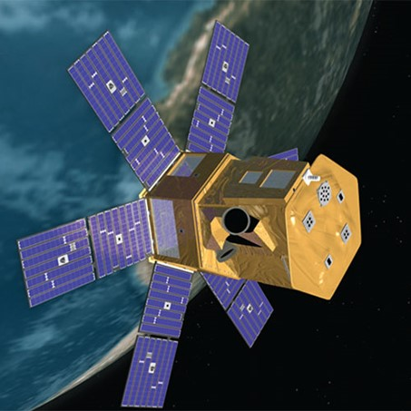

Solar Radiation and Climate Experiment
(SORCE)

- Status : Current, Extended Mission.
- Mission Category : Earth Observing System (EOS), A-Train.
- Launch Date : January 25, 2003.
- Launch Location : Kennedy Space Center, Florida.
- Relevant Science Focus Areas :
- Climate Variability and Change.
- Atmospheric Composition.
- Water and Energy Cycles.
Science Goals
- SORCE is part of the NASA Earth Observing System of satellites, a series of satellite missions
designed to monitor the Earth system from space. These sustained and comprehensive observations
include the measurement of solar irradiance as the dominant direct energy input to land, ocean, and
atmosphere.
As an integral part of this, the SORCE mission aims to :
- Make precise and accurate measurements of the total solar irradiance (TSI).
These observations are connected to previous TSI measurements to form a long-term record of
solar influences on Earth.
- Establish a precise data set of visible and near infrared solar spectral irradiance (SSI)
measurements suitable for future climate studies.
- Compare daily measurements of solar ultraviolet irradiance with bright, early-type stars for
in-flight
calibration and correction of possible changes in the instrument responsivity.
Related Applications
- Public Health.
- Renewable Energy.